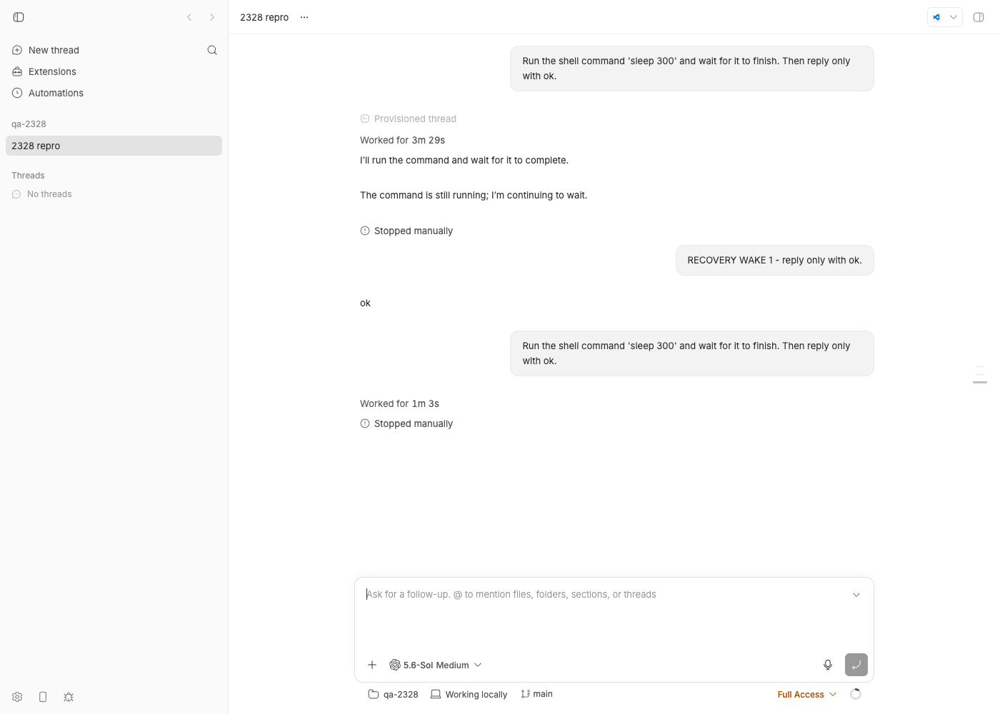
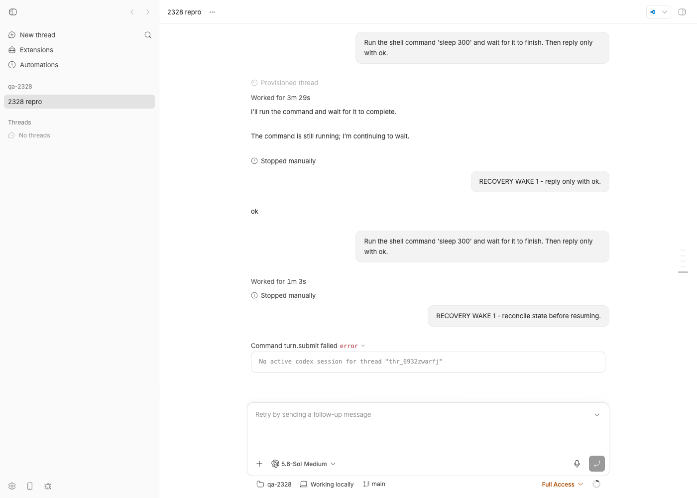
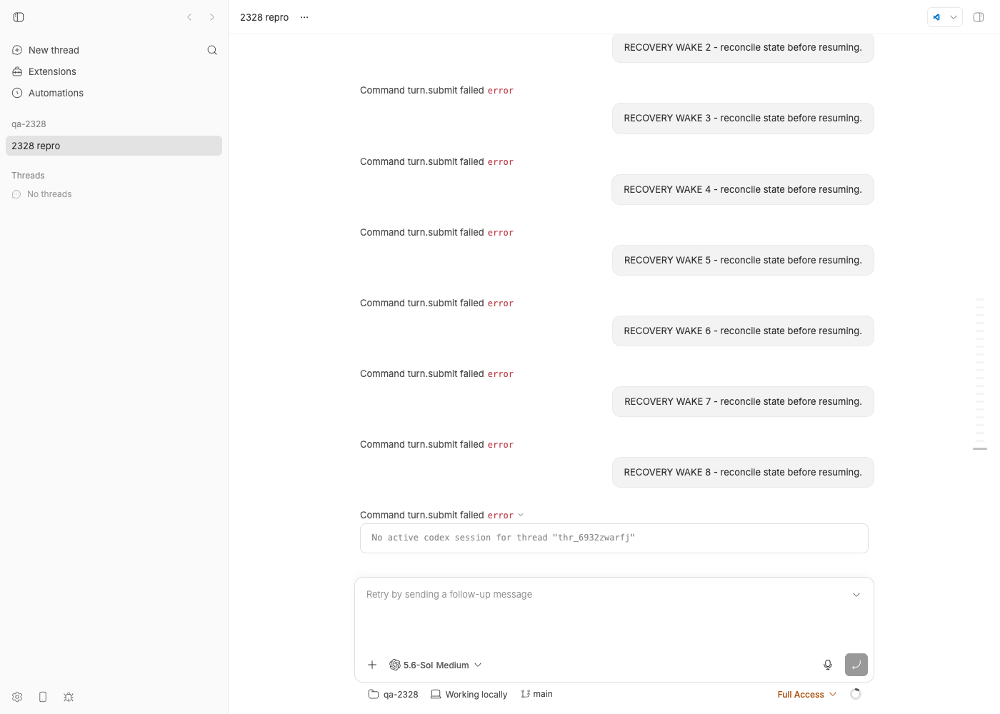
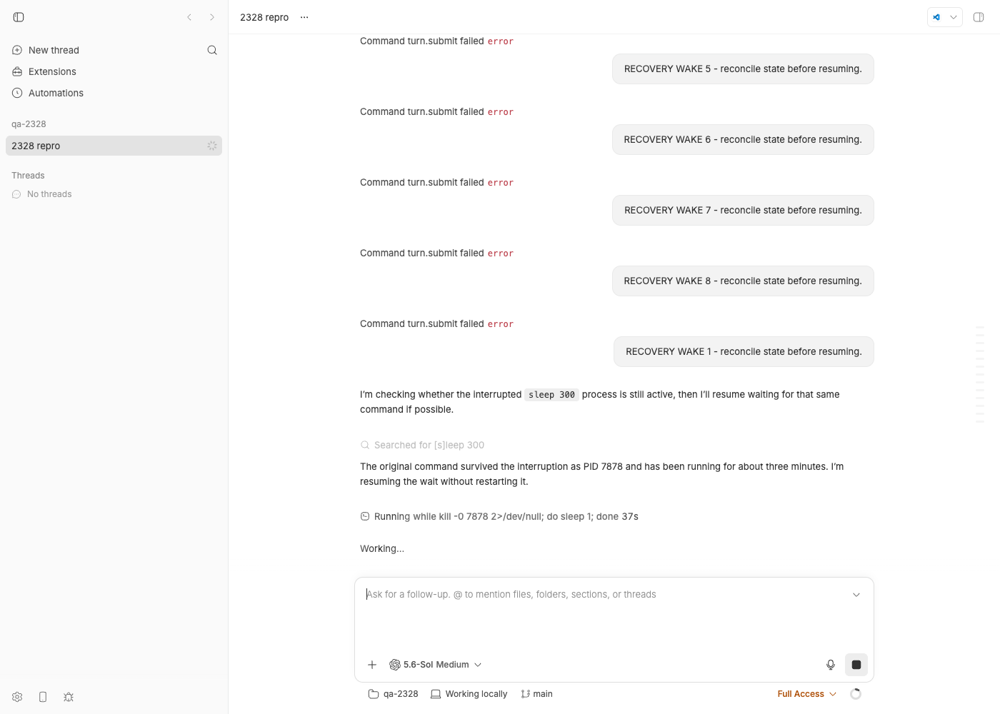

#2328 · Automatic recovery storms a dead Codex thread with repeated no-active-session errors
Verdict: REPRODUCED (the bb-side wedge and the unbounded identical-rejection storm; the "automatic recovery" sender is the reporter's own plugin, not bb) · Root-cause confidence: high
1. TL;DR
A Codex thread gets into a state where every new message is rejected within ~25 ms with No active codex session for thread "<id>", producing one client/turn/rejected plus one system/error per attempt and flipping the thread to error, forever. The thread is not actually dead: its rollout is intact and a bb thread stop followed by one more message resumes it fine. What is broken is a split-brain between two daemon-side components: the host daemon's agent-runtime still has the thread registered (so it never asks the codex bridge to resume the session), while the codex bridge has already released the session (so it refuses every turn/start). Nothing in bb notices or repairs this divergence; the rejection is a generic -32000 error with no typed code or recovery hint, so the runtime cannot tell "no session" from any other failure.
I reproduced one concrete way the split-brain arises with real Codex on a dev instance: the runtime's generic JSON-RPC timeout for thread/stop is 30 s, but the codex bridge's interrupt path may legitimately take up to 60 s (child turn/interrupt) + 5 s (settlement) before it releases the session and answers. When the app-server is slow to answer the interrupt (here: paused for 43 s; in the wild: a hung or heavily loaded app-server mid-command, cf. the reporter's sibling issue #2327), the runtime gives up at 30 s and keeps the thread registered; the bridge finishes the interrupt later and releases the session. From then on the thread is wedged.
The "RECOVERY WAKE" messages themselves are not sent by bb. They come from the reporter's own plugin pixexid/bb-collab, whose thread.failed handler sends one agent-only wake every time the thread enters error, with no per-failure dedup or backoff. bb's contribution to the storm is that each rejected send emits run.failed → thread.failed again, so the plugin re-arms itself on bb's own rejection of its previous attempt. bb's first-party provider-retry plugin does not participate (it only retries rate-limit failures, bounded per reset window).
2. Claims vs findings
| Claim from the issue | Status | Evidence |
|---|---|---|
An errored Codex thread receives repeated automatic agent-only RECOVERY WAKE new-turn requests. | Partially refuted | The string RECOVERY WAKE does not exist in get-bb/bb. It is emitted by the reporter's plugin pixexid/bb-collab (server.ts, recoverErroredThread, triggered from bb.events.on("thread.failed")). bb's only first-party automatic retry (plugins/provider-retry) sends "Please continue." only for subscription rate-limit failures and is bounded by attemptedWindows. The repeated sends are external; the repeated rejections are bb's. |
Every request is rejected with No active codex session, immediately followed by system/error. | Verified | Live: 9 wakes → 9 × (client/turn/rejected + system/error) with that exact message; thread status error after each (storm-events.json, screenshots below). Source: settleThreadCommandFailure appends both events for a failed turn.submit. |
| The recovery mechanism keeps retrying the same unrecoverable thread. | Verified (mechanism is external, the re-arm is bb's) | bb-collab dedups only while a send is in flight (recoveryInFlight). bb emits thread.failed on every applied transition into error (emitPluginThreadLifecycleOutcome), including a rejected start that never reached the provider, so the loop is closed by bb's own rejection. |
Thread status error, environment ready, zero queued messages, last turn/completed preserved. | Verified | Same state in my repro: environment ready, last turn/completed {status: interrupted} at seq 65, no queued messages, status error. |
| The thread is "dead" / unrecoverable. | Refuted | The provider session is restorable. bb thread stop on the errored thread (server release path → runtime forgets the thread) followed by one message resumed the rollout and ran a normal turn (heal-events.json, screenshot 5). The thread is wedged, not dead. |
After threads.stop the storm continued; the next recovery was rejected with already has an active writer. | Unverified (consistent with the mechanism) | already has an active writer is a Codex app-server error (present in the codex 0.149.1 binary, absent from bb). After a stop the runtime forgets the thread, the next send resumes a fresh app-server from the rollout; whether Codex then rejects turn/start is Codex-side state (see #2327). In my repro the post-stop send succeeded. |
| Archiving the thread stopped the storm. | Verified by code | ensureThreadIsWritable rejects sends to archived threads before any dispatch, and bb-collab checks archivedAt before sending. Not a fix, just removes the target. |
| 38 recovery requests, 10 within ~3 minutes. | Unverified | Reporter's counts; I did not have their data. My run shows the cadence is bounded only by the sender: each rejection takes the daemon ~11–70 ms. |
3. Environment
- bb
494f66526913557ab076e048218236f0a6610927(main as of 2026-08-24); origin/main had no newer commits at investigation time. - macOS 26.5.2 (Darwin 25.5.0, arm64), Node v22.23.1, pnpm via repo; Codex CLI 0.149.1 (
codex app-server). - Own dev instance from
scripts/bb-dev-app current: Apphttp://localhost:14670, Serverhttp://localhost:22670, Host daemon127.0.0.1:30670, data dir~/.bb-dev/bb-machines-HOST.getbb.app-checkouts-bb-.claude-worktrees-wf_846839f8-f8a-23-b240de56546a. Projectproj_t3vmhnnusn(local path/tmp/bb-2328-qa-repo), threadthr_6932zwarfj, provider codex, permission mode full. - Unit repro:
packages/agent-runtimevitest with a purpose-built test bridge.
4. Minimal reproduction
4a. Unit-level (deterministic, no Codex needed)
A minimal provider bridge models the two codex-bridge behaviours involved: thread/stop releases the session immediately but answers late; turn/start with no session answers -32000 "No active codex session for thread …" (same code path shape as requireLiveSessionForTurn). The test drives the real @bb/agent-runtime through a stop whose reply arrives after the runtime's 30 s timer.
- Copy
slow-stop-no-session-bridge.tstopackages/agent-runtime/src/test/bridges/andruntime.issue-2328-no-session-wedge.test.tstopackages/agent-runtime/src/. - Run from the package:
cd packages/agent-runtime && pnpm exec vitest run src/runtime.issue-2328-no-session-wedge.test.ts
- Result on 494f66526 (
vitest-output.txt):✓ keeps the thread registered after a timed-out stop, then rejects every turn without ever re-resuming × EXPECTED (fails today): a timed-out stop leaves no stale registration behind AssertionError: expected true to be false // runtime.hasThread("t2") is still true after the stop timed outThe first test passes because it asserts the buggy behaviour: afterstopThreadrejects withJSON-RPC request timed out: thread/stop,hasThreadstaystrue, fiverunTurncalls are each rejected with/No active codex session/, and the bridge's request record shows fiveturn/startand zerothread/resume. An explicitresumeThreadthen makes the same turn succeed. The second test asserts the desired invariant and fails on main.
4b. Live end-to-end with real Codex (what a user hits)
- Start a dev instance, create a project on a scratch repo, spawn a codex thread that runs a long command:
bb thread spawn --project <proj> --provider codex --permission-mode full --title "2328 repro" \ --prompt "Run the shell command 'sleep 300' and wait for it to finish. Then reply only with ok." --json
Wait until the event log showsitem/started commandExecution … sleep 300. - Find the thread's
codex app-serverprocess under your host daemon (daemon → bridge →node …/codex app-server→ vendorcodex app-serverbinary). Make it slow to answer the interrupt, then stop the thread, wait so that the runtime's 30 s timer fires but the bridge's 60 s child timer does not, and let the app-server continue (live-stop-sequence.sh):kill -STOP <app-server pid> bb thread stop thr_6932zwarfj --json # returns {"ok":true} after 30 s (see note) sleep 12 # total pause ≈ 43 s: > 30 s runtime timeout, < 60 s bridge child timeout kill -CONT <app-server pid>Expected: the stop interrupts the turn and the thread is idle and usable.
Actual (log,dev log):t0 10:10:34 kill -STOP 79592 (codex app-server) t1 10:10:34 bb thread stop thr_6932zwarfj { "ok": true, "threadId": "thr_6932zwarfj" } t2 10:11:05 stop command returned; waiting 12s t3 10:11:17 kill -CONT 79592 [host-daemon] online host RPC failed {"type":"thread.stop"} err: "JSON-RPC request timed out: thread/stop" [host-daemon] Online host RPC {"commandType":"thread.stop","errorCode":"command_failed","handlerMs":30002.3,"ok":false} [server] Awaited thread stop command failed {"intent":"interrupt","threadId":"thr_6932zwarfj"} # after SIGCONT the interrupt lands: seq 61 system/thread/interrupted {reason: manual-stop}, seq 65 turn/completed {status: interrupted}; thread status: idle - Send any message (this is what bb-collab's wake does:
threads.sendwithmode: "auto"):bb thread tell thr_6932zwarfj --mode auto --json "RECOVERY WAKE 1 - reconcile state before resuming."
Expected: the turn runs (the session is resumable from its rollout).
Actual:66 client/turn/requested 67 client/turn/rejected {reason: command_failed, message: 'No active codex session for thread "thr_6932zwarfj"'} 68 system/error {code: thread_command_failed, message: 'Command turn.submit failed', detail: 'No active codex session for thread "thr_6932zwarfj"'} status after wake 1: error [host-daemon] Online host RPC {"commandType":"turn.submit","errorCode":"command_failed","handlerMs":32.9,"ok":false} - Repeat the send 8 more times, each after the previous one settles (
storm.sh; this is the shape of bb-collab'sthread.failed→ send loop). Actual (storm-output.txt,storm-events.json):Counter({'client/turn/requested': 9, 'client/turn/rejected': 9, 'system/error': 9}) status after wake 1..9: error (×9) turn.submit handlerMs: 32.9, 29.1, 17.8, 25.4, 11.1, 17.4, 25.8, 70, 12.9 # no resume is ever attempted - Heal check (proves the runtime registration was the stale side):
bb thread stop thr_6932zwarfj --json # thread is in status error → server takes the release path bb thread tell thr_6932zwarfj --mode auto --json "RECOVERY WAKE 1 - reconcile state before resuming."
Actual: seq 94thread/identity(a freshthread/resumeof the same rollout), seq 97turn/started, the agent answers normally; daemonturn.submit … handlerMs 1919.9, ok:true.




bb thread stop on the errored thread, the very next wake resumes the rollout and runs (the agent even finds the original sleep 300 still alive). Same thread, same rollout: it was never dead.Note on step 2: the CLI and the POST /threads/:id/stop route report {"ok": true} even though the daemon stop timed out, because an interrupt-intent stop swallows its failure (runAwaitedThreadStopCommand: "An interrupt swallows a failure: its stopping status is durable"). The user has no signal that the runtime/bridge just diverged.
Repro files: 2328/repro/ (bridge, test, scripts, event dumps, full dev log, candidate-fix diff).
5. Root cause
5a. The wedge: runtime registration outlives the bridge session, and nothing reconciles them
On the host daemon, two components hold per-thread session state:
- The agent-runtime's identity registry.
hasThread(threadId)is true when the registry has a provider session for the thread (runtime.ts#L2658-L2660). - The codex bridge's
sessionsByBbThreadIdmap.turn/startrequires an entry (bridge.ts#L1565-L1570):let session = sessionsByBbThreadId.get(params.threadId); if (!session || session.closing) { throw new Error(`No active codex session for thread "${params.threadId}"`); }
The daemon decides whether to resume a session purely from the runtime's view (command-handlers/thread.ts#L168-L175):
async function resumeThreadRuntimeIfMissing(args) {
if (entry.runtime.hasThread(command.threadId)) {
return; // ← never asks the bridge
}
…
await entry.runtime.resumeThread({ … providerThreadId: resumeContext.providerThreadId … });
}
So whenever the registry says "registered" but the bridge has no entry, every turn.submit goes straight to turn/start and is rejected. The rejection is a generic BRIDGE_ERROR (-32000) with no recovery hint (handleTurnStart → rejectWithCodexError), and runTurn's catch only clears the pending-start marker and marks the session idle (runtime.ts#L2186-L2192); it never drops the registration. Compare steerTurn, which has a typed NO_ACTIVE_TURN to act on; there is no typed "no session" code in BRIDGE_JSON_RPC_ERRORS (errors.ts#L13-L26). The daemon's idle-session reaper cannot heal it either: it calls stopThread, which requires a live process and only runs after the idle window, and the server never sends a release for an error thread on its own.
Every rejected submit is settled by the server as a failed command: client/turn/rejected + system/error + run.failed (thread-lifecycle.ts#L771-L810), and run.failed into error emits the plugin event thread.failed (plugin-thread-events.ts#L43-L56). That is the re-arm signal bb-collab listens to.
5b. One proven way the divergence is created: stop timeout asymmetry
The runtime's generic JSON-RPC timeout is 30 s (runtime-json-rpc.ts#L324-L334, args.timeoutMs ?? 30_000) and stopThread does not override it (runtime.ts#L2302-L2340). On success it forgets the thread; on any failure it rethrows without forgetting. The codex bridge's interrupt path (handleThreadStop) sends turn/interrupt to the app-server with CHILD_REQUEST_TIMEOUT_MS = 60_000, then waits up to INTERRUPT_SETTLEMENT_TIMEOUT_MS = 5_000, and only then calls releaseSession(session) and answers. Any interrupt that takes between 30 s and 65 s therefore ends with: runtime timed out (registration kept), bridge released (session gone). The live repro above hits exactly this window (app-server paused 43 s). A real app-server can be that slow when it is wedged inside a long command execution, which is precisely the sibling report #2327 from the same reporter ("turn/completed can precede command completion…" followed by the same two errors).
Other divergence paths exist with the same symptom and are not covered by a timeout fix alone: any lost/late thread/stop reply (bridge stdout hiccup, daemon event-loop stall), and any future bridge-side release that the runtime does not observe. The underlying defect is that the runtime treats its registry as the truth and the protocol gives it no typed way to learn it is wrong.
5c. Why it looks like "automatic recovery storms the thread"
bb-collab's recoverErroredThread (server.ts) runs on every thread.failed whose thread has status === "error", guards only against a concurrent in-flight send, and calls bb.sdk.threads.send({mode: "auto", input: [{visibility: "agent-only", text: "RECOVERY WAKE — …"}]}). bb rejects in ~25 ms, emits thread.failed, the plugin sends again. The cadence the reporter saw ("sub-10-second") is the plugin's own threads.get/environments.status round trips; bb imposes no bound.
6. Proposed fix (first principles)
- Make "no session" a typed protocol outcome and act on it in the runtime (root cause). Add e.g.
SESSION_NOT_FOUND: -32004toBRIDGE_JSON_RPC_ERRORS(provider-bridge-protocol) and return it from the codex bridge'srequireLiveSessionForTurn/handleTurnSteer(and the pi/ACP equivalents) instead of the genericBRIDGE_ERROR. Inruntime.runTurn/steerTurn, on that code:forgetThreadRuntimeStateForProviderState(proc.identity, threadId)before rethrowing, so the daemon's nextturn.submittakes theresumeThreadRuntimeIfMissingpath and rebuilds the session from the rollout (a resume replaces whatever the bridge still holds, seeconstructThreadSession). This heals every divergence cause, not just the timeout. Risk: a bridge that wrongly reports no-session for a live turn would cause a resume that kills that turn; the code should only be emitted when the bridge truly holds nothing. This changes the bridge wire contract (new error code), so document it indocs/provider-bridge-protocol.md; it does not change server↔daemon payloads, so noHOST_DAEMON_PROTOCOL_VERSIONbump is needed for this part. - Do not keep a registration the runtime cannot vouch for after a stop it gave up on. In
stopThread, distinguish a bridge rejection (JsonRpcResponseError: the bridge answered and still owns the session — keep state; two existing tests depend on this) from no answer (timeout / process exit): forget the thread so the next command resumes. I validated this variant: withcandidate-fix-runtime-stop-timeout.diffthe "EXPECTED" test passes, the buggy-behaviour test fails at itshasThreadassertion as intended, and the four existing runtime suites pass (115/115). A naive "forget on any stop failure" breakspreserves active turn state when the stop request failsandkeeps releasing later sessions after one release fails(log). Additionally givethread/stopa request timeout that covers the bridge's documented interrupt budget (≥ 65 s for codex) so the common case does not race at all. - Do not re-arm external recovery on bb's own rejection (server policy). A
turn.submitthat never produced a provider turn (rejected beforeturn/input/accepted) is a command failure, not a provider failure; consider not emitting a freshthread.failedwhen the thread was already inerrorwith the same error detail, or includeerror/requestIdcontext so plugins can dedup. Expose a recovery-disposition (or at leastbb thread stop's release semantics) as the documented "start a fresh provider session" action; today the user-facing composer hint "Retry by sending a follow-up message" is wrong for this state. - Surface stop failures.
POST /threads/:id/stopreturns{ok:true}after a 30 s daemon timeout; log at warn is not enough when the consequence is a wedged thread.
The plugin-side bound (single-flight per interruption identity, backoff, terminal disposition) the issue asks for is bb-collab's responsibility; items 1–2 remove the state that makes its retries pointless, item 3 stops bb from feeding the loop.
7. PR review
No open pull request is linked to this issue.
8. Related issues
- #2327 — same reporter, same day: turn/completed preceding command completion, then alternating
already has an active writer/No active codex session. The second error is this wedge; the first is Codex app-server state after a resume and is outside this report. - #2275, #1706, #1789 — earlier queued-message / dead-environment delivery reports from the same orchestration setup.
- #1874 — removal of
threads.rateLimitRecovery; the reporter's plugin since carries its own recovery logic. plugins/provider-codex/src/bridge/bridge.archived-rebuild.test.ts(added in c5b53caab) documents the same failure class from the bridge side: "a thread the bridge forgot would fail every later turn with No active codex session while the runtime still believes it has a live session". That fix kept a resumable entry after a failed rebuild; it did not make the runtime resilient to the bridge forgetting for any other reason.
9. Appendix
Daemon RPC outcomes for the live thread (from dev-instance-full.log)
thread.start handlerMs 5422.6 ok:true thread.stop handlerMs 30000.9 errorCode command_failed (attempt 1: pause 67 s > 60 s child timeout → bridge's interrupt errored, no release, next wake SUCCEEDED — control case) thread.stop handlerMs 30002.3 errorCode command_failed (attempt 2: pause 43 s → bridge released after the runtime gave up) turn.submit handlerMs 32.9 / 29.1 / 17.8 / 25.4 / 11.1 / 17.4 / 25.8 / 70 / 12.9 errorCode command_failed (9 wakes) turn.submit handlerMs 1919.9 ok:true (after bb thread stop: resume + turn)
Control case screenshot (attempt 1, wake succeeded because the pause exceeded the bridge's own 60 s timeout): assets/2328-02-first-wake-rejected.png (file name predates the result; it shows the "ok" reply). assets/2328-01-idle-after-stop-timeout.png is the idle state after attempt 1.
{kind=link}
{kind=link}
Bridge-side error message in the daemon log
[host-daemon] online host RPC failed {"type":"turn.submit"}
err: { "type": "JsonRpcResponseError", "message": "No active codex session for thread \"thr_6932zwarfj\"",
at jsonRpcResponseError (packages/provider-bridge-protocol/src/bridge-kit/runtime-json-rpc.ts:178)
at settleJsonRpcResponse (…/runtime-json-rpc.ts:296)
at handleStdoutLine (packages/agent-runtime/src/runtime.ts:1463) }
[server] … "status": 502, "body": { "message": "No active codex session for thread \"thr_6932zwarfj\"", "code": "command_failed", "retryable": false }
Where the reporter's wake comes from (pixexid/bb-collab server.ts, excerpt)
bb.events.on("thread.failed", async (payload) => {
…
if (status === "error") { … await recoverErroredThread(id, payload.thread.projectId, identity.holder, identity.lane); }
});
const recoverErroredThread = async (threadId, projectId, holder, lane) => {
if (recoveryInFlight.has(recoveryKey)) { bb.log.warn(`error-recovery wake suppressed: … reason=recovery-in-flight`); return null; }
…
await withRecoverySendTimeout(threadId, () => bb.sdk.threads.send({
threadId, mode: "auto",
input: [{ type: "text", visibility: "agent-only", text: `RECOVERY WAKE — reconcile state before resuming. …`, mentions: [] }],
}));
…
};
Commands run (abridged)
gh issue view 2328 --comments ; gh issue view 2327 --json title,body git grep -n "RECOVERY WAKE" ; git grep -n "No active codex session" ; gh search code "RECOVERY WAKE" --repo pixexid/bb-collab strings …/@openai/codex-darwin-arm64/vendor/aarch64-apple-darwin/bin/codex | grep "active writer" # → " already has an active writer" pnpm install --frozen-lockfile --prefer-offline ; pnpm exec turbo run build cd packages/agent-runtime && pnpm exec vitest run src/runtime.issue-2328-no-session-wedge.test.ts pnpm exec turbo run typecheck --filter=@bb/agent-runtime scripts/bb-dev-app current ; curl -X POST $BB_SERVER_URL/api/v1/projects … ; bb thread spawn … ; live-stop-sequence.sh 79592 thr_6932zwarfj 12 ; storm.sh thr_6932zwarfj 8 ; heal.sh thr_6932zwarfj git diff packages/agent-runtime/src/runtime.ts > candidate-fix-runtime-stop-timeout.diff ; git checkout -- packages/agent-runtime/src/runtime.ts pnpm dev:stop